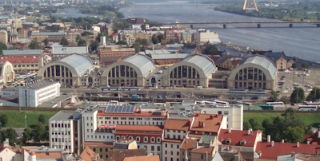
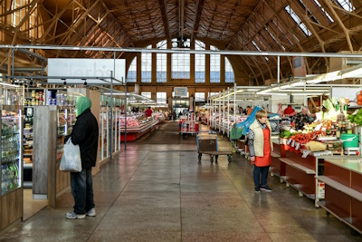
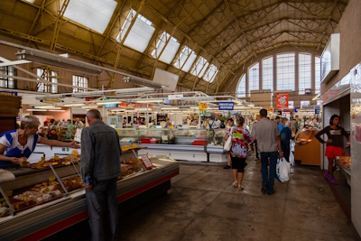

Many attractions can be found in Rīga, the capital city of Latvia. Here are some examples of locations
that you can visit.
Lido
Lido is a restaurant/buffet with delicious Latvian food - with their HUGE selection, you could
pretty much try any speciality in latvia here at a decent price.

Not only is it a restaurant, it's also a cultural experience. You can immerse yourself in a
traditional Latvian setting, with wooden buildings, cobblestone pathways, and lush greenery.

Lido has a unique self-service concept, in which customers pick and choose from a variety of
dishes laid out in a cafeteria-style setup. This gives people a lot of flexibility, and it
creates a rather lively atmosphere.

Lido also run a funfair all year round (provided good weather), which they call Lidolande.
[source]
Old Rīga (Vecrīga)
Vecrīga, the old town, is the historic center of Rīga. It's a UNESCO World Heritage Site that
has well-preserved medieval architecture and cobblestone streets.
[source]

This maze of narrow cobblestone streets is filled with a mixture of architectural styles
including Nordic, Gothic, Renaissance, and baroque, including historic sites such as the
13th-century Riga Castle,
St. Peter's Church,
the Swedish Gate,
and the Freedom Monument.

There are many things to do in the old town besides taking in the view, for example, art
galleries, museums, theatres, and music venues.

Riga Central Market
Riga Central Market is located in the heart of Riga. It is one of Europe's largest markets by
space, and was built in 1930, making it nearly 100 years old!
[source]

The market hangars were originally built for German Zeppelins! It was later repurposed as a
marketplace and is now a UNESCO World Heritage Site.
[source]

Inside, you'll find vendors selling many types of food, such as meat, fish, dairy, fruits,
vegetables, pastries, baked goods, snacks, and drinks! Sometimes, you can get the chance to
sample some authentic cuisine. You can also find textiles and artisanal crafts.
